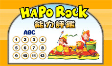

| Hapo Rock 能力評鑑 | |
| 為了確實掌握學生之學習成效，哈波網際學校特別為學員量身訂做了能力評鑑。呈現之形式為線上考題測試，期許藉由多元之評量方式，檢測學生之學習成效。 在學習完starter時，學員應能熟悉字母Aa到Zz之筆順、以及字母出現之順序，此外，還能簡單應答簡單之生活對話。讀完第一級時，學員應能熟悉生活中的基本句型和字彙，包括家人、年齡等常見單字，並已經熟悉a到z的自然發音。 讀完第二級時，學員應能熟悉生活中的基本句型和字彙，包括水果、玩具、情緒之表達、位置之陳述等，並能熟悉單、複數之用法與發音中子音之比較。讀完第三級時，學員應能熟悉生活中的基本句型和字彙，包括球類運動、食物星期與身體不為之說法等，並能理解可數和不可數名詞之用法，以及發音中短母音與長母音之比較。讀完第四級時，學員應能熟悉生活中的進階句型和字彙，包括作息之表達、交通工具與社群地點之說法等，還能運用基本之動詞、動詞片語和發音中之氣音、連音之比較。 |  |